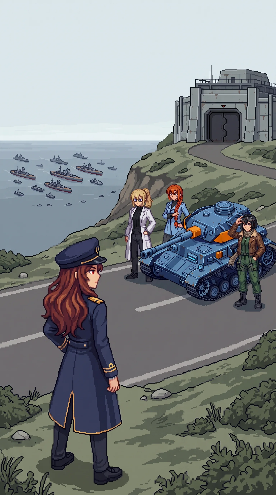

Chapter 32: The Center¶
Published August 17, 2026

The first living thing I saw was a weed, come up through a crack in the road shoulder somewhere in the last hour of the dark, thin and half-yellow and past any doubt alive. I looked at it longer than it warranted. It was the first growing thing the island had shown me since the winter city. Katyusha had taken the maintained road all night at a pace that let the others hold formation around her, and I had ridden the tank's deck with my back against the turret and had not slept, because sleeping was a thing my body had stopped offering and I had stopped asking it for. The contamination had fallen away behind us a grade at a time through the dark, and by the small hours the road shoulder was going from dead grey-brown to a low scrub that lived in the grudging way of things that have spent years held down and are finally not held down anymore.
The light came up flat and overcast and lighter than any sky the western sector had allowed us. As the road bent toward the crown of the island the horizon began to open, and I put a hand on the turret and Katyusha stopped without being told, and I got down to take the last of the grade on my own feet. I told myself it was to read the ground. The ground did not need reading. I knew the shape of the complex before it cleared the rise, the long low spread of it and the tower off its northern end, knew it the way I had known the doors and the paths all through the west, and I stopped the thought there, where I always stopped it. Off in the scrub a bird said something. One bird. It was the first I had heard since the north.
Nadeshiko dropped the helicopter lower and held there a while above the returning ground. "It stops," she said. "The bad ground. It stops before here." She said it the way she says a thing she wants to be larger than it is, to see whether anyone will let it be. Nobody enlarged it, and nobody argued it down. The older question was in there under the small one, the one she had carried since the emptied city, and she left it where it was this close to the center and only looked at the living ground a while longer before she took the recon line back up.
Katyusha's turret came around a few degrees toward the crown before any of us had spoken. "There is a presence that is aware of us."
Maria was walking the road on the tank's off side, hat down against the last of the dark. She read the same thing a beat behind Katyusha, off whatever her instruments could reach for out here on dry ground. "I don't like that."
"Can it act?" Nadeshiko held the recon line low overhead, the line she flies when she wants all of us inside a single glance.
"Not yet." I came off the last of the grade and stood on the road proper. "The substrate is there. The autonomous function is not. Drona told us, before she went quiet. Dormant since the reset."
"For how long has it been present." Katyusha does not put a lift on her questions. She states them flat and waits for them to be true or not.
"The whole time."
Nobody moved on that for a moment. The whole time meant since the beach. It meant the thing at the center of the island had been aware of us climbing toward it from the first morning, through every sector, while we read the record of what it was, and had done nothing at all but be aware. It was not a comfortable thing to have said out loud, so I said the next thing instead, and we kept moving.
There was disturbed ground at the outer approach, around a weathered boundary post that had marked the complex perimeter back when there was a complex here to mark the perimeter of. Recent, not the slow work that years do to a place. Something had come through and turned the earth not long ago, and the rain had not yet finished smoothing it over.
"The alpha units have come here." Katyusha was not asking.
"Yes."
None of us said why. We had read that much off the ground without needing it spelled: where the thing at the center was, they came. They had been here before us. They were somewhere close now. Everything on the island still capable of choosing to move had turned toward the same high point, and we were only the last of it to arrive.
The last of the picket found us on the approach. Not Oracle, whatever Katyusha had felt reaching for us off the crown; this was the ordinary corrupted stock we had been clearing since the first day, the drones that ran because nothing had ever told them to stop, and they came apart against the team the same as they always had. I got the tank between myself and the open ground when the firing started and waited it out low behind the hull. It was over inside a minute. Katyusha logged it and said nothing. There was nothing in it worth saying.
Then the road gave onto the outer perimeter, and the installation was in front of us, and it was whole. That was the wrong word for a building and it was the only one that fit. Every other structure this island had handed us had been doing some version of coming apart, slowly, for years. This one had not. It stood at the top of its ground intact and squared and maintained, glass unbroken in the frames, the lines of it as clean as the day they were drawn, and that was worse than any ruin had been. A ruin is a thing that was stopped. This had not been stopped. It had only been left, and it had gone on keeping itself the entire time, waiting, built to last by people who had been very good at building things to last.
I stood in front of it a moment. Something turned over at the edge of the dark, a half-word out of before the waking, reaching the way it always reached and closing before it arrived. I let it go, the way I always did, and we went on.
The overlook was a natural rise where the access road leveled before its final climb, and from it, for the first time since the snow and the terrace in the north, the fleet was there in full.
It was no longer the horizon rumor it had been on the south coast, or the far shapes we had counted off the terrace rail in the cold. From this height it read as the thing it was: capital vessels laid out in formation, support craft spaced around them, a patrol line drawn ahead, all of it out on the grey water to the south and west, and none of it anchored. Holding. There is a difference between a fleet at anchor and a fleet holding position, and the difference is that one of them has already decided it might need to move.
"They're not attacking," Nadeshiko said, come down out of the air to the road for it.
"They are waiting." Katyusha had the formation the same moment Maria did, from the other direction, the tactics of it rather than the sea of it. "The instrument requires a peaceful transfer. A contested landing damages the instrument. They will use force only when they have no cleaner option left."
Nadeshiko again, smaller than before. "Can we fight them off?"
Katyusha took a moment she does not usually take. "Not indefinitely."
She left the word bare. She had run the whole assessment somewhere behind her eyes and she handed us the one word at the end of it and kept the rest, because the rest would not have helped.
"There is a separate note. Filed, not answered." Katyusha said it to no one in particular, the way she flags a thing she intends to return to. "Since the west, the resistance we have met has run lighter than a defense curve for an asset like this should produce. I have not closed the discrepancy."
I added it to the list of things I was not going to solve before we went through that door, and we went on.
Maria had stopped on the rise a little apart from the rest of us. She was not looking at the ships. She was looking at the pattern the ships made, the intervals between them, where they sat relative to the coast's access points, the reasons a formation is the shape it is, and she read all of it the way she had read the tide-mark and the coastline in the grey weeks behind us, completely, to the end. Then she stopped reading it. I watched her come off it, the whole apparatus of her attention going quiet, and what was under it was neither the ease she wears nor the flat category she had used down in the contamination.
"My kind," she said.
She had said it before. In the vault where we learned what Oracle was made of, it had been a question she was putting to the room, taking the measure of it. Since then, low, more than once, on her way somewhere with it. This was neither. The ease was gone out of it and the distance was gone with it, and what was left was plain, and it belonged to her. She meant the ships. She meant the grey figures that had kept the record for us all through the west. She meant the dormant thing at the top of the hill that had been aware of us the whole time. One kind, all of it, and she was of it, and she had finally worked out what it came to. She did not tell us. She kept the answer in with the rest of what she carries and left it there. I did not ask her for it. Maria hands a thing over when she has decided you should have it and not one hour before, and I had learned by now to let her clock run.
The installation entrance stood at the head of the last rise, sealed and dark and not locked. Nothing here would have to be forced. It had been built by people who did not lock what they meant to be found, and it had been left standing, and kept ready, by the man who had set every step of the road I walked to reach it.
There was almost nothing left to read.
The whole length of the island I had come uncovering what I had already done, one signed page after another. Whatever waited on the other side of that door was the last of it. After it there would be no more record to walk through, no more second hand to place, no more of my own work to meet as someone else's. There would be the thing itself, and a decision to make about it, and for once nothing to read first.
The team drew in around me the same as they had since the first morning, without my saying anything to bring them. Above us the complex kept its ground in the flat light, unbroken and unhurried, waiting on the one decision it had been left standing to receive.
Katyusha started up the last of the rise toward the entrance, and we went with her. Behind us, for the first time since the beach, the record we had spent the whole island reading had nothing left to say. Ahead of us there was only the door, and the thing behind it, and the morning we were going to have to decide in.
Previous Chapter: The Ledger | Next Chapter: Drona's Account
Panzer Island is also a strategy game available on Steam, Google Play, and itch.io. Chapter 1 of the game is free. If you want to experience the story differently, or continue past where the novel is currently, visit the Panzer Island homepage.
If you're enjoying the story, consider following or leaving a rating on Royal Road. It helps new readers find the series.